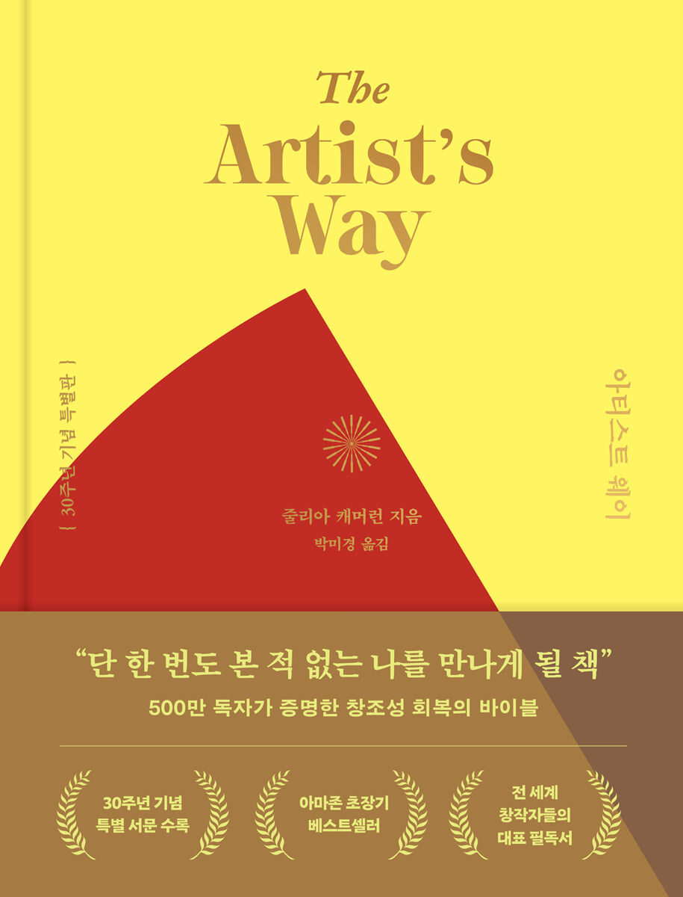

하루 세 페이지 쓰기 챌린지 · 1기 모집
한 달, 서른 날.
아침에 쓰는 습관을 잡습니다.

길잡이가 되어 줄 책
『아티스트 웨이』 · 줄리아 캐머런(Julia Cameron)
The Artist's Way · 30주년 기념 특별판 · 박미경 옮김
참가비 2만 원 · 25일 이상 쓰면 1만 원 페이백
칸 하나가 하루입니다 — 11월 서른 날. 붉은 칸이 일요일입니다(주말에도 씁니다).
WHAT하루 세 페이지 쓰기란?
아침에 일어나 손으로 세 페이지를 씁니다.
남에게 보여 주지 않습니다.
이 글쓰기를 「모닝페이지」라고 부릅니다. 줄리아 캐머런이 『아티스트 웨이』에서 권한 방법으로, 아침에 눈뜨자마자 떠오르는 생각을 고치지 않고 그대로 적어 내려갑니다.
하루에 하는 일
- 하나 — 아침에 씁니다
- 둘 — 사진 한 장을 올립니다
- 셋 — 내일 또 씁니다
이건 아닙니다
- 글을 보여 주는 모임
- 잘 쓴 글을 요구하는 모임
- 빠진 날을 탓하는 모임
HOW1기 진행 개요
| 기간 | 2026년 11월 1일(일) ~ 11월 30일(월)
한 달 서른 날 · 주말에도 씁니다 |
|---|
| 쓰는 분량 | 아침마다 손으로 세 페이지 |
|---|
| 사진 | 카카오톡 오픈채팅방에 그날 밤 11시 59분까지
글이 읽히지 않게, 날짜와 채운 쪽만 찍어 올립니다 |
|---|
| 정원 | 8명 |
|---|
| 참가비 | 2만 원 · 25일 이상 쓰면 1만 원 페이백
25일 이상 쓰시면 그 달은 다 쓰신 것입니다 |
|---|
| 준비물 | 노트 한 권과 볼펜, 마음가짐 |
|---|
| 신청 방법 | 아래 「신청하기」 단추를 누르면 신청서가 열립니다
신청하시면 입금 계좌를 알려 드립니다 · 입금 확인 후 오픈채팅방에 초대합니다 |
|---|
| 모집 마감 | 선착순 |
|---|
"빠진 날은 탓하지 않습니다.
내일 또 쓰면 됩니다."
HOST함께 쓰는 사람
✍️
이서윤
25년 9월부터 하루 세 페이지를 쓰고 있습니다.
벽돌책 챌린지 1~5기 진행 · 한국강사신문 「이서윤의 문장연구소」 연재 중
11월 1일 일요일 아침,
첫 세 페이지를 함께 씁니다.
아침에 세 페이지 · 매일 · 서른 날 · 정원 여덟 분
참가비 2만 원 · 25일 이상 쓰면 1만 원 페이백
모집 마감 선착순
신청하기 →